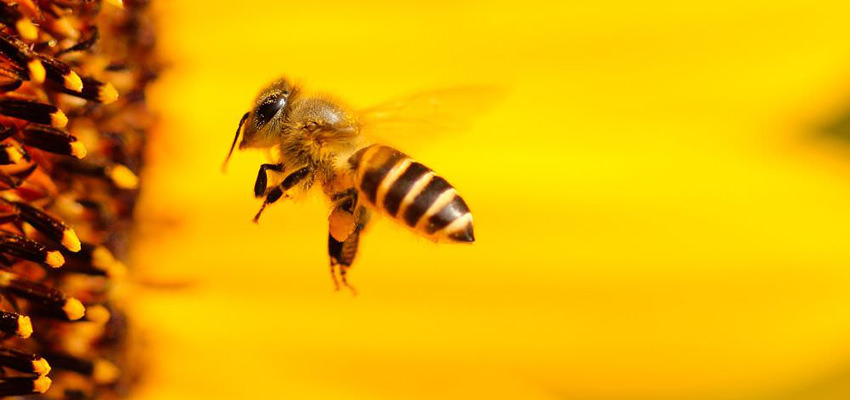

Female Bees
There are many different jobs inside a beehive, nurse, builder, queen just to name a few. The female bees do all of these jobs during their short lifespan of 50 days, as they get older they change jobs, ending with the dangerous task of forager.
Nurse Bees
When she is young, the bee will be a nurse bee. These bees nurture and feed bee larvae. They take on the job of processing incoming nectar, feeding the queen, as well as making and capping the honey.
Under-taker bees
The job of these worker bees is to take any bees that have died within the hive or larvae that did not grow and remove them from the hive. They will take them far away from the hive, to reduce the likelihood of disease in the hive.
Queen Attendants
The queen attendants have a very important job. They take care of the queen by feeding and grooming her. Yet, even more important is their incidental role in spreading Queen Mandibular Pheromone (QMP) throughout the hive. This is a pheromone given off by queen. After encountering the queen, the attendants spread QMP throughout the hive, a signal to the rest of the bees that the hive still has a viable queen.
Pollen Packers
When foraging bees bring pollen back to the hive it needs to be stored in a cell. The bee will take the pollen and place it inside the honeycomb. The pollen will then be mixed with a little honey to avoid it spoiling. The pollen is eventually used to feed the brood.
Honey Sealers
These bees have the task of taking honey, drying it to the appropriate water content and then capping it. The workers have wax glands in their abdomen that produce sheets of wax which are used to cap the honey.
Honeycomb Builders
Honey bees can produce their own wax but the builders of honeycomb will receive wax from another bee and use it to start building more honeycomb.
Fanners
These workers fan the hive with their wings, using evaporated water to help it stay cool. Basically, they are the air conditioning for the hive.
Water Carriers
The water carriers go hand-in-hand with the fanning bees. Their job is to carry water to the fanning bees, in order to cool the hive. They will gather water from a nearby water source and spread it along the backs of the fanning bees. This allows them to fan and cool the hive.
Guard Bees
Guard bees hover at the entrance of the hive to protect it from unwanted visitors. The number of guard bees will vary depending upon the season and how much traffic the hive is having at the time.
Forager
Foraging bees gather food for the hive. They will travel to collect pollen, nectar and propolis for the hive.
The Queen
The Queen bee is the only bee in the hive that can reproduce. Her life begins in a specially constructed cell where she is fed soley on royal jelly unlike the worker bee larvae which are only fed it for the first few days. After hatching, she will seek out other young queens and kill them with her stinger. Queen bees don't die after stinging. A few days after hatching, the queens go off to mate with a drone and return to the hive to begin laying eggs.
The queen can choose the sex of her eggs by choosing whether to fertilise it or not. The Queen is attented to by the Queens attendants who cater for her every needs.